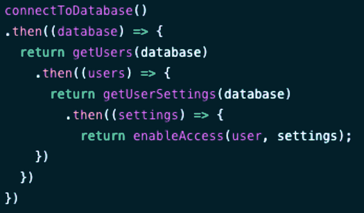

Definición de asincronía: Que no tiene lugar en completa correspondencia temporal con otro proceso o con la causa que lo produce.
https://dle.rae.es/as%C3%ADncrono
En programación: La asincronía es un modelo de programación que permite que se inicie una operación de larga duración (como una solicitud a un servidor) y se continúe ejecutando otras tareas sin tener que esperar la respuesta, manejando el resultado o error de la operación inicial en el futuro cuando ésta está disponible.
Referencias:
Cuando nos referimos a comunicación nos referimos a realizar peticiones a un servidor a través de una red u operaciones de entrada/salida. Existen diferencias grandes en cómo se gestiona esta comunicación dependiendo si es síncrona o asíncrona.
Comunicación Síncrona:
Sería como si en un restaurante un cliente pide una sopa y un vaso de agua (por ese orden) y el cocinero se ponga a hacer la sopa esperando a que hierva el caldo, mirándolo sin hacer nada más. Hasta que no esté completado el caldo no seguirá trabajando en la sopa añadiendo el resto de los ingredientes y, cuando por fin esté terminada la sopa, servirá el vaso de agua.
La espera del cliente para el vaso de agua es inaceptable.
Comunicación Asíncrona:
Siguiendo el ejemplo del cocinero, el cocinero pone a hervir el caldo y lo deja calentándose. Como no puede hacer nada más en la sopa hasta que hierva el caldo, inmediatamente sirve el vaso de agua. Cuando hierva el caldo, volverá a él y seguirá trabajando en la sopa.
El cliente apenas ha tenido que esperar nada por el vaso de agua.
Una función de callback (no se suele traducir) es simplemente una función que se envía como parámetro y será ejecutada cuando se termina un proceso.
En el ejemplo de abajo la función imprimeResultado se pasa como función de callback.
const imprimeResultado = (resultado) => {
console.log("El resultado es " + resultado);
}
const sumarCB = (x, y, cb) => {
const res = x + y;
cb(res);
}
sumarCB(3, 4, imprimeResultado);
Otros ejemplos podrían ser los eventListeners, como los que hemos usado para leer ficheros del servidor en el apartado 5a donde vimos la API File (en ese apartado también se introdujo la programación asíncrona).
AJAX (Asynchronous JavaScript and XML), supuso un cambio importante en la manera en la que funcionaban las webs, haciéndolas más dinámicas y mejorando la experiencia del usuario al permitir cargar contenido de un servidor de manera asíncrona, actualizando una parte de la página sin necesidad de recargar la página completamente.
AJAX se terminó convirtiendo en un una buzzword que involucraba un conjunto de técnicas que añadían efectos, animaciones y funcionalidad a las páginas no relacionadas con la asincronía.
Microsoft implementó el objeto XMLHttpRequest por su cuenta sin esperar a ningún estándar, lo que obligó a otros navegadores a implementarlo también de la misma forma. Ahora mismo esta técnica está superada y sólo se encontrará en código legacy (antiguo y/o heredado).
Para ver cómo funcionaba vamos a usar un ejemplo que permite cargar un documento XML de una web de manera asíncrona.
La idea básica es esta: en el servidor tenemos un fichero XML con contenido (o bien el fichero se genera dinámicamente en el servidor, no importa).
En el cliente creamos la función que aparece abajo, que recibe el nombre del fichero y una función de callback que tratará el XML que recuperemos.
La función crea un objeto de tipo XMLHttpRequest y realiza una petición al servidor. Obtendremos como respuesta un objeto de tipo documento XML, que es análogo al objeto document de la página HTML (las propiedades y métodos de manejo de nodos son iguales). Ese documento se lo pasamos a la función de callback como parámetro.
Nota: en el código está comentado la posibilidad de leer un fichero de texto en vez de un XML.
function loadXMLDoc(filename, callback) {
let xhttp; // Definimos el objeto XMLHTTPRequest
if (window.XMLHttpRequest) {
xhttp = new XMLHttpRequest();
}
else { // código de IE5 and IE6
xhttp = new ActiveXObject("Microsoft.XMLHTTP");
}
xhttp.onreadystatechange = function (){ // Definimos el listener
if (xhttp.readyState === XMLHttpRequest.DONE) {
if (xhttp.status === 200) {
callback(xhttp.responseXML);
// callback(xhttp.responseText); // si el fichero es de texto
} else {
console.log("Hubo un error con la petición.");
}
}
};
xhttp.open("GET", filename, true); //true = asíncrona, //false = síncrona
xhttp.send();
}
Si queremos acudir a una URL podemos hacerlo modificando la siguiente línea:
httpRequest.open("GET", "http://www.example.org/some.file", true);
Por ejemplo: al hacer click en un botón se ejecutará esto: loadXMLDoc("ejemplo_peliculas.xml", gestionarFichero);
Y la función podría ser algo así:
function gestionarFichero(xml) {
const divResultado = document.getElementById("resultado");
let res = "";
xml.querySelectorAll("pelicula").forEach( p=>{
const nombre = p.querySelector("nombre");
const actor = nombre.nextElementSibling;
const director = actor.nextElementSibling;
const categoria = actor.nextElementSibling.nextElementSibling;
res += `<li>${nombre.textContent} - ${actor.textContent} - ${director.textContent} - ${categoria.textContent}</li>`;
});
divResultado.innerHTML = `<ul>${res}</ul>`;
}
Interesante: fíjate que como se ha leído un fichero XML se pueden usar directamente los métodos que hemos visto del DOM. En el ejemplo de arriba se fuerza el código para poder mostrar un querySelectorAll(), un querySelector(), un nextElementSibling y un textContent.
Importante: un elemento XML no tiene una propiedad innerText, por eso se usa textContent (también se podría usar un innerHTML).
Ejercicio 1: Crea una web que automáticamente cargue el fichero XML desde https://www.w3schools.com/xml/simple.xml y lo procese de manera que se muestren todas las comidas disponibles, con toda la información, cada una en una card distinta.
Ejercicio 2: Carga dinámica de formularios.
Añade un botón con la etiqueta Realizar un pedido que al pulsarlo cargue el fichero form.xml, cree un formulario con la información contenida en él y se quite él mismo del DOM. El fichero contiene esta información:
<?xml version="1.0" encoding="UTF-8"?> <form> <title>Postre</title> <select id="slPostre"></select> <input_number>Cantidad</input_number> <button type="button" id="btnAnadir">Añadir al pedido</button> </form>
Instrucciones:
Nota: aunque puedes añadir un elemento del XML al HTML directamente, éste no se convertirá a un elementoHTML y seguirá siendo un elemento XML, por lo que, por ejemplo, un <button> o un <select> no funcionará como esperamos. En el ejemplo de arriba puede ser tentador hacer algo como:
fieldset.append( xml.querySelector("#slPostre") ); // no funcionará
Pero lamentablemente, eso no nos generará un elemento <select>, aunque lo parezca. Lo que tendremos que hacer es parsear el texto del XML para que se convierta en un elemento HTML con el innerHTML o crear nosotros el elemento y añadirlo.
fieldset.innerHTML = xml.querySelector("#slPostre").outerHTML; // sí funcionará
En el caso del botón ocurrirá lo mismo.
Evidentemente, el lío que hay organizar para leer algo con la idea de Microsoft es complejo (aunque en su momento no había nada mejor). Pero con la API Fetch todo se ha simplificado bastante.
La API Fetch permite realizar peticiones a un servidor con esta sintaxis:
fetch( url, objetoConParámetros )
El objeto con los parámetros es opcional, pero puede ser bastante complejo, para por ejemplo, realizar una petición POST a una API enviando datos para crear un nuevo producto. Todo esto lo veremos más adelante, pero aquí aparece ya a modo de introducción.
fetch("https://dummyjson.com/products/add",{
method: "POST",
headers: {
"Content-type" : "application/json"
},
body: JSON.stringify({
description: "Drones de combate",
price: "1000",
rating: "9/10"
})
})
.then(res=>res.json())
.then(json=>console.log(json))
.catch(error=>console.error(error));
Vamos a resolver como primer ejemplo la lectura de un fichero de texto en formato CSV (comma separated values).
En este caso, en lugar de usar callbacks, se usan promesas, que es un objeto que representa el resultado posible (éxito o fracaso) de una operación asíncrona.
Una promesa es la garantía de que algo ocurrirá en el futuro, por ejemplo que se pidan datos al servidor y que nos avisarán cuando estén listos para ser usados (o cuando haya fallado la petición). Se usan para no bloquear el hilo de ejecución mientras mantenemos la sincronía.
Puedes generar tus propias promesas adaptando este código:
const promesa = new Promise((resolve, reject) => {
// Simular una operación asincrónica
const exito = true;
if (exito) {
resolve('¡Éxito!'); // La operación fue exitosa
} else {
reject( new Error('Hubo un error') ); // La operación falló
}
});
Ejercicio 3: ¿En qué orden se mostrarán los mensajes? ¿Qué es el Event loop en Javascript?
function promesa(){
return new Promise( (res,rej)=>{
res("3: La promesa");
});
}
function ordenDeEjecución(){
console.log("1: primer console");
// setTimeout( ()=>console.log("2: setTimeOut"), 100); // cambiarlo a 0 y probar de nuevo
// promesa().then( mensaje=>{
// console.log(mensaje);
// });
console.log("4: último console de la función");
}
ordenDeEjecución();
console.log("5: el último console");
Ampliación: puedes crear tus operaciones microtask con queueMicrotask(()=>{console.log("Hola")});
En su forma más sencilla (y menos robusta) el código es simplemente este (usando como ejemplo el servicio jsonplaceholder):
fetch('https://jsonplaceholder.typicode.com/todos/1')
.then(response => response.json())
.then(json => console.log(json))
Si bien es cierto que funciona, asume que todo, absolutamente todo, irá perfectamente. Si hay problemas de red, DNS, errores en la URL, el servidor no responde, devolvió otro tipo de datos como una imagen, no tenemos permisos sobre ese recurso, el recurso no existe, etc. tendremos que capturar estos errores.
Una manera más realista sería la que se describe a continuación.
document.querySelector("#btnJSON").addEventListener("click", e=>{
divResultado.innerHTML="Cargando...";
fetch('https://jsonplaceholder.typicode.com/todos/1')
.then(response => {
if (!response.ok) throw new Error(`Error HTTP: ${response.status} ${response.statusText}`);
return response.json();
})
.then(json => divResultado.innerHTML = JSON.stringify(json, "" , 2) )
.catch(error => divResultado.innerHTML=error);
});
Imaginemos ahora que en el servidor tenemos un fichero llamado datos.csv que queremos leer cuando se pulse un botón.
Fichero datos.csv:
nombre,nota1,nota2 Javier,5,6 Mariano,7,9 Carlos,3,10
Esta sería la manera correcta de hacerlo:
function iniciar() {
divResultado.innerHTML = "Cargando...";
fetch('datos.csv')
.then(response => {
// Verificar si la solicitud fue exitosa (código de respuesta 200..299)
if (!response.ok) {
throw new Error('Error de red o servidor');
}
// Convertir la respuesta a formato JSON con response.json() o texto
return response.text();
})
.then(data => {
// Hacer algo con los datos
divResultado.innerHTML = "";
console.log(data);
data.split("\n").forEach(e => {divResultado.innerHTML += "<p>" + e + "</p>"});
})
.catch(error => {
// Manejar errores
console.error('Hubo un problema con la solicitud: ', error);
divResultado.innerHTML = "Hubo un problema con la solicitud: "+error;
});
}
La respuesta se recibe del servidor en el primer .then() en un objeto de tipo Response que tiene algunas funciones y atributos interesantes y necesarias para poder utilizar los datos:
Nota: también existe un .finally() que se ejecutará siempre al final, tanto si se terminó correctamente como si hubo un error capturado por el .catch()
El problema de los .then() es que rápidamente se convierte en código complicado de mantener, sobre todo si tenemos que realizar una llamada que depende del resultado de otra anterior.
Si encadenamos muchas promesas podemos llegar a tener lo que se conoce como Promise Hell (similar al callback hell, pero con promesas).

¿Y si hubiéramos querido leer un XML? No hay un response.xml(), así que hay que usar un parseador.
fetch("datos.xml")
.then(response => response.text())
.then(str => new window.DOMParser().parseFromString(str, "text/xml"))
.then(data => console.log(data));
Es bastante sencillo conseguirlo, tanto por el uso de la API Fetch como por el uso de async/await.
//IMPORTANTE: Esto sólo funciona si el fichero está en un servidor web como express, apache o al menos LiveServer
async function iniciar() {
divResultado.innerHTML = "Cargando...";
const data = await getData("datos.csv");
divResultado.innerHTML = "";
console.log(data);
data.split("\n").forEach(e => {divResultado.innerHTML += "<p>" + e + "</p>"});
}
async function getData(fichero) {
const response = await fetch(fichero);
const data = await response.text();
return data;
}
document.querySelector("#btn").addEventListener('click', iniciar);
Fíjate que el fichero se lee en la función getData() y es muy sencilla de entender. Si queremos algo más robusto, tendremos que hacer algo así:
async function getData(fichero) {
const response = await fetch(fichero);
if (!response.ok) {
throw new Error('Error de red o servidor');
}
const data = await response.text();
return data;
}
Ahora que puede devolver un error, tendremos que envolver su llamada con un bloque try..catch.
async function iniciar() {
divResultado.innerHTML = "Cargando...";
try{
const data = await getData("datos.cs");
divResultado.innerHTML = "";
console.log(data);
data.split("\n").forEach(e => {divResultado.innerHTML += "<p>" + e + "</p>"});
}
catch(error){
divResultado.innerHTML = "Hubo un problema con la solicitud: "+error;
}
}
Usar async sobre una función no es algo inocuo, en el momento en el que creamos una función asíncrona, ésta devolverá una promesa. Por ejemplo:
async function getNumber(){return 7;}
getNumber(); //Promise { <state>: "fulfilled", <value>: 7 }
Lo que ocurre en el ejemplo de arriba es que se devuelve una promesa cuyo valor resolve es 7.
Dado este fichero profesores.json:
{
"profesores": [
{ "nombre": "Javier", "apellido": "Mancera"},
{ "nombre": "Carlos", "apellido": "Rodríguez"},
{ "nombre": "Juan", "apellido": "Vílches"}
]
}
Es simplemente una variación del código anterior.
"use strict";
//IMPORTANTE: Esto sólo funciona si el fichero csv está en un servidor como express o apache
async function iniciar() {
divResultado.innerHTML = "Cargando...";
const data = await getData("profesores.json");
divResultado.innerHTML = "";
console.log(data);
data.profesores.forEach(e => {divResultado.innerHTML += `<p>${e.nombre} ${e.apellido}</p>`});
}
async function getData(fichero) {
const response = await fetch(fichero);
const data = await response.json();
return data;
}
document.querySelector("#btn").addEventListener('click', iniciar);
Ejercicio 4: Usando la API Fetch, muestra en un documento HTML bien presentado la información que devuelve las siguientes llamadas a una API
Para el primer y tercer apartado utiliza async/await, para el segundo utiliza then/catch.
Otros ejemplos: https://apidocs.apigee.com/docs/mock-target/1/routes/xml/get
Opcional: Usa la llamada de abajo que permite indicar el nombre de un usuario como parámetro.
https://apidocs.apigee.com/docs/mock-target/1/routes/user/get
Ejercicio 5: Usa el servicio de geolocalización por IP de https://getgeoapi.com/ y crea una web que permita al usuario introducir una IP pública y que al pulsar un botón se muestre la información asociada a dicha IP.
Mostrará el nombre del país, la bandera, la población del país y la ciudad.
Documentación: https://getgeoapi.com/documentation/
Ejercicio 6: Crea una web que al cargar haga una llamada a la API Rest https://jsonplaceholder.typicode.com/users que devuelve 10 usuarios y muestra en una tabla de cada usuario el nombre del usuario (el username), el e-mail, el sitio web y la ciudad en la que vive. El id de cada usuario se almacenará en un atributo data-id de la fila.
Nota: No almacenes la respuesta en una variable, queremos usar este ejercicio para practicar llamadas al servidor.
Cuando se pulse en uno de los usuarios, se recuperará el id del usuario del data-id y se realizará una llamada para recuperar más información de ese usuario concreto. Por ejemplo, si el usuario elegido es el 5 se llamará a https://jsonplaceholder.typicode.com/users/5
Se mostrará en una división abajo el detalle del usuario elegido, se mostrará concretamente el nombre completo y el nombre de su compañía.
Ejemplo 7: Crea una web que tenga una imagen y un botón Anterior y uno Siguiente.
Javier Mancera Fernández
https://www.youtube.com/@Profesorinfo-x